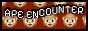
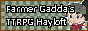
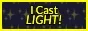
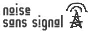
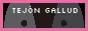

Blogroll
In my continued effort to unearth the traditions of the internet of yore, I present to you: my blogroll! This is a mix of stuff that I actively read and stuff that I’m intending to read and stuff that I read a really good post on one time, added to this list, and then forgot about. These are mostly, but not entirely, about TTRPGS.
This list could always be longer! Email me something you think I’d like about games, clown, or pumping iron! brendan@brendanalbano.com
ROOTRING
rootring is a curated ring for discovering TTRPG blogs without relying on social timelines or recommendation algorithms. rootring links blogs together so readers can move from one site to the next and discover new writing by following the ring.
If you just arrived here from rootring, welcome! Head to home or archive to read my posts, and come back here to the blogroll to continue your rootring journey!
ROOTRING
├─ prev blog
├─ rand blog
├─ ring dir
└─ next blog
Brick Wall
If a webring wasn’t enough, let’s crank the internet nostalgia up to 11 with these RPG blogger bricks:
    
If you’d like to add my brick to your blogroll, use this:
Blogs and Games Press
- Traverse Fantasy: You never know if you’re gonna get RPG theory or political theory, and they’re both good.
- Bastionland: Into the Odd is brilliant and Chris McDowall’s thoughts on games are interesting.
- Rise Up Comus: A great blog, and I keep meaning to read the Designing Dungeons course.
- Goblin Punch: I regularly reread the Dungeon Checklist.
- Rascal: Worker-owned TTRPG journalism!
- Mothership.blog: Worker-owned videogame journalism!
- Looking at Picture Books: in particular the one about Goodnight Moon
Magazines / Blog Anthologies
- Knock!: Go wild and get all five issues!
- Glaive: I got issue #2 at Dark Future and it ruled.
- Prismatic Wisdom: a whole blog in a book!
Podcasts
- RTFM: Every episode gives me something to think about.
- Between Two Cairns OSR stuff. Great outros.
- Yes Indie’d insightful interviews.
- Blogs on Tape I don’t like reading blogs on my computer, so I listen to them or read them in print whenever I can!
- We Read the Bloggies more blogs you can listen to!
- Barbell Medicine is my go to for gym content.
- Deep Questions is self-help that has helped me.
Misc
- FWD RPG PNW: Runs free, beginner friendly RPGs in Portland!
- Go Play NW: A lovely indie TTRPG con in Seattle.
- Dropout.tv: More satisfying than YouTube.
- The Games in “Children’s Games” is my favorite list.